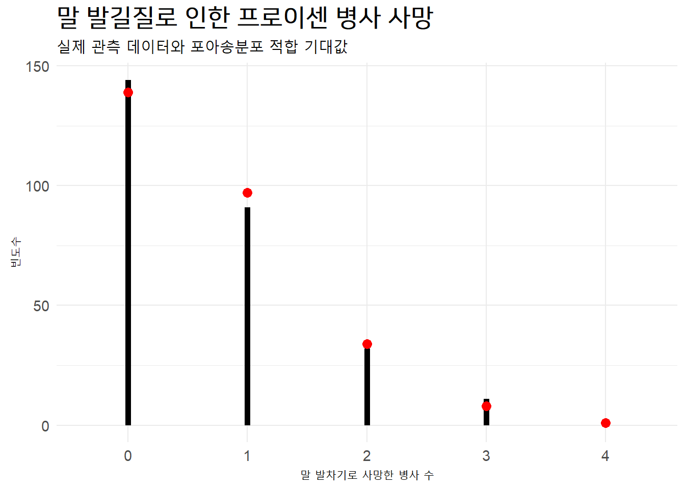
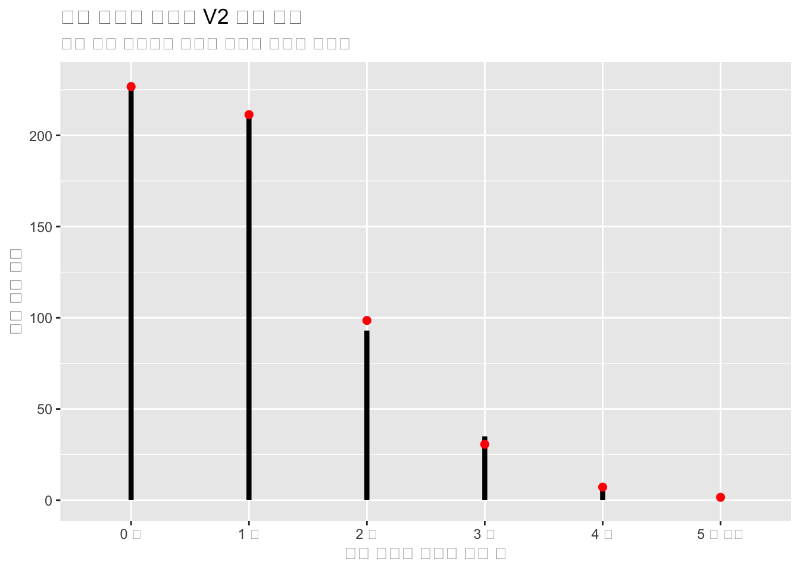

포아송은 미래에 발생할 경우의 수를 예측하기 위해서 포아송 분포를 창안했다. 좀더 구체적으로 고정된 시간 범위에 발생할 사건을 예측하기 위해서다.
한가지 사례로 한국 R 사용자회 페이스북 그룹에 매주 페이스북 게시글을 올리는데 좋아요를 누르는 평균 회원수가 10명이다. 새로운 페이스북 게시글을 올렸는데 좋아요를 누른 회원이 15명이 될 확률은 얼마나 될까?
이와 같이 다음주(미래) 좋아요를 누른(사건) 회원수가 15명(5, 10, 20, …)이 될 확률을 알고 싶은 것이다.
10.1.1 포아송 분포 수렴
다음 조건을 만족할 때 이항분포가 포아송 분포로 수렴되어 근사할 수 있다.
시행 횟수 \(n\) 이 매우 크다.
성공 확률 \(p\) 가 매우 작다.
따라서, \(\lambda = n \times p\) 가 일정하다.
이항분포 \(Bin(n, p)\)는 포아송 분포 \(Poi(\lambda)\)에 근사한다.
전체 제품 중에서 고장확률이 매우 작은 전자제품을 사례로 들어보자. 예를 들어, 어떤 공장에서 10,000개의 제품을 제조했을 때, 각 제품이 고장날 확률이 0.0001이라고 가정하면 이항분포로 전체 제품 중 1개 고장확률을 계산할 수 있지만, 제품 수가 매우 크고 고장 확률이 매우 작기 때문에 \(\lambda = np = 10,000 \times 0.0001 = 1\)를 갖는 포아송 분포를 사용하여 근사할 수 있다.
10.1.2 월간 교통사고
한 도시의 주요 교차로에서, 지난 1년 동안의 데이터를 기반으로 하루 평균 3건의 교통 사고가 발생했다고 가정하자. 이 정보를 바탕으로 특정 날에 교통 사고가 발생할 횟수의 확률 분포를 예측해보자.
포아송 분포의 평균은 \(\lambda\)이며, 이 경우에는 하루 평균 교통 사고 횟수인 3으로 설정할 수 있다.
이제 포아송 분포의 확률 질량 함수를 사용하여, 특정 날에 교통 사고가 k번 발생할 확률을 계산할 수 있다.
\[
P(X=k) = \frac{\lambda^k e^{-\lambda}}{k!}
\]
여기서, \(e\)는 자연상수입니다.
예를 들어, 특정 날에 교통 사고가 정확히 2번 발생할 확률을 계산하려면:
\[P(X=2) = \frac{3^2 e^{-3}}{2!} = 0.224\]
한걸음 더 들어가 실세 교통사고분석시스템(TAAS) 웹사이트에서 2022년 월별 교통사고 데이터를 얻을 수 있다.
# A tibble: 12 × 2
월 사고건수
<chr> <dbl>
1 01월 15894
2 02월 12362
3 03월 13620
4 04월 16472
5 05월 18065
6 06월 16481
7 07월 17115
8 08월 16496
9 09월 17216
10 10월 18508
11 11월 17578
12 12월 17029
월별 평균 사고건수를 mean() 함수를 사용해서 계산할 수 있다. 교통량은 상당히 크고, 교통사고 확률은 매우 낮기 때문에 포아송 분포로 근사를 하는 것이 가능하다. 교통사고 건수가 많기 때문에 단위를 천대 기준으로 조정하여 포아송 분포 모수 \(\lambda\)를 계산한다.
프로이센 기병대에서 말 발길질로 사망한 병사의 수를 1875년부터 1894년까지, 14개의 기병 군단을 대상으로 수집한 데이터(Prussian Horse-Kick Data)가 포아송 분포에 잘 적합되는 것으로 유명하다.
원본 데이터를 디지털로 복원한 후에 고정된 기간 말 발차기 사망자수를 빈도통계를 통해 표로 정리할 수 있다. 총 관측 횟수는 \(14 \times 20 = 280\) (즉, 1875년부터 1894년까지 20년간 프로이센 군단 14개를 관측), 총 사망자 병사수가 196명으로부터 평균 사망병사수를 \(\lambda = \frac{196}{280} = 0.7\) 으로 계산할 수 있다. 다음으로 포아송분포에 적합시켜서 분포로부터 말 발차기 사망자수 빈도수를 계산한다.
시각적으로 실제 관측한 빈도수와 포아송 분포로부터 추정한 값을 함께 겹칠 경우 일부 차이가 있긴 하지만 대체로 포아송 분포에 잘 적합됨을 확인할 수 있다.
kick_tbl |>filter(사망횟수 !="합계") |>ggplot() +geom_segment(aes(x = 사망횟수, xend = 사망횟수, y =0, yend=빈도수),linewidth=2) +geom_point(aes(사망횟수, 포아송적합), size=3, color="red") +labs(x ="말 발차기로 사망한 병사 수",y ="빈도수",title ="말 발길질로 인한 프로이센 병사 사망",subtitle ="실제 관측 데이터와 포아송분포 적합 기대값")

10.3 런던 투하 V2 로켓
2차 세계대전 중 독일은 신형 무기 V1, V2 로켓을 개발하여 전쟁 막판에 영국 런던을 폭격하여 반전을 노렸다. 독일 신형폭탄의 공격을 받은 영국에서는 독일에서 발사한 신형 폭탄이 정밀 타격한 것인지 아니면 무작위로 대충 발사를 한 것인지 데이터를 통해 검정을 하고자 한다. 12
런던에 떨어진 폭탄이 포아송 분포, 즉 무작위로 떨어진 것이라고 가정하고 시각화를 한다. 포아송 분포는 모수가 \(\lambda\) 하나만 추정하면 되기 때문에 데이터에서 모수를 추정한다.
\[P(\text{ 해당 구간에서 발생한 k개 사건(k events in interval)}) = e^{-\lambda}\frac{\lambda^k}{k!}\]
# 2. 포아송 분포 --------- hit <-537area <-576(lambda <- hit/area)
[1] 0.9322917
ggplot(bomb_df, aes(x=bombs,xend=bombs, y=0, yend=hit)) +geom_segment(size=1.5) +geom_point(aes(bombs, expected), size=2, color="red") +labs(x="런던 지역에 투하된 폭탄 수", y="런던 지역 숫자", title="영국 런던에 떨어진 V2 로켓 폭탄",subtitle="실제 투하 폭탄수와 포아송 분포로 추정한 폭탄수")

모수(\(\lambda\))는 0.9322917로 추정된다. 이를 실제 데이터와 포아송 분포에서 나온 데이터와 겹쳐 시각화한다.
Chi-squared test for given probabilities with simulated p-value (based
on 2000 replicates)
data: bomb_df$hit
X-squared = 1.1709, df = NA, p-value = 0.9465
# 4. 최종 데이터 ---------bomb_df$r_expected <-573*c( dpois(0:4, lambda), 1-sum(dpois(0:4, lambda)))bomb_df |>gt() |>gt_theme_538()
bombs
hit
expected
r_expected
0 개
229
226.74
225.561771
1 개
211
211.39
210.289359
2 개
93
98.54
98.025509
3 개
35
30.62
30.462788
4 개
7
7.14
7.100051
5 개 이상
1
1.57
1.560522
10.3.4 지리정보를 통한 이해
공간정보를 활용한 사례로 이를 공간정보에 시각화하면 다음과 같다. 물론 정확한 데이터가 없어 런던 남부에 떨어진 폭탄이 포아송 분포를 따른다고 가정하고 576개 구획으로 나눈 것에 임의로 폭탄이 떨어진 것을 시각화하면 다음과 같다.
포아송 분포를 가정하고 통계적 검정도 물론 가능하다. spatstat 팩키지의 함수를 활용하여 통계적 검정을 해도 동일한 결론에 도달하게 된다.
bomb_test <-quadrat.test(south_london, nx =24, ny =24, method="Chisq")bomb_test
Chi-squared test of CSR using quadrat counts
data: south_london
X2 = 637.88, df = 575, p-value = 0.07029
alternative hypothesis: two.sided
Quadrats: 24 by 24 grid of tiles
Tessellation is marked